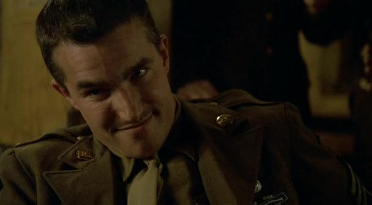
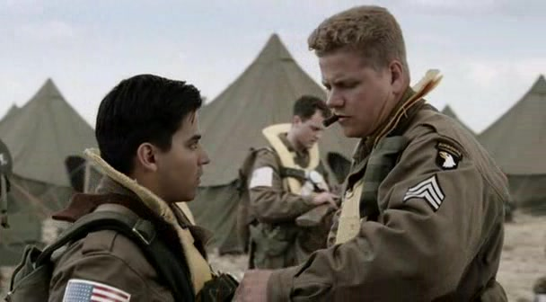
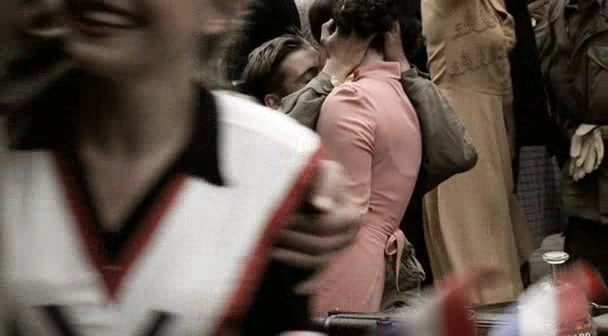
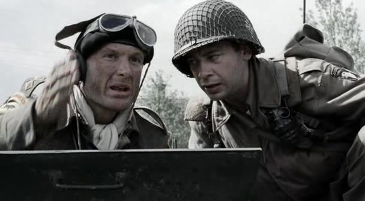
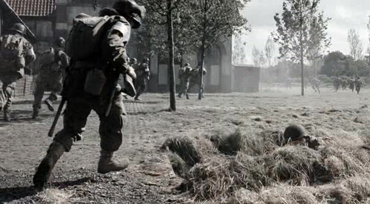
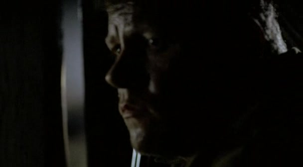
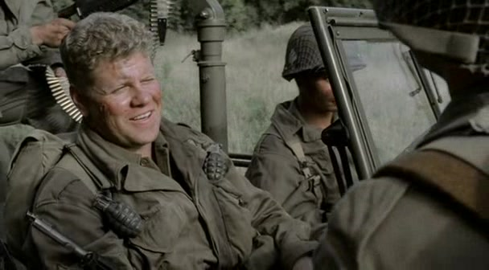

阅读线索
THE QUESTION
一群没有共同过去的人，怎样开始把彼此当作自己人？
诺曼底之后，E 连迎来补充兵。新面孔向往老兵的荣誉，老兵却知道，每一次熟悉一个名字，都可能意味着下一次失去它。市场花园行动起初像一条回家的捷径：白天空降、平民欢迎、装甲部队向前推进。纽南的交战打断了这种顺利感，也把一向照顾新兵的兰德尔曼留在敌后。本集的关系变化，可以沿着一个动作理解：起初是士官替新兵检查装备，后来是新兵主动想回去找士官。以下只涉及第 1—4 集；重演中的人物行为标为剧情事实，分析属于个人解读，不能直接替代历史档案。[1]
本页范围回顾本集与必要的前集背景；以下主题分析针对剧集呈现，历史补充另作说明。
04EASY COMPANY101st AIRBORNE
FIELDNOTES
01 / THE STORY
沿着场景，读懂选择。
8 个关键场景，连起本集的因果与变化。
按剧中叙事顺序排列。批注默认展开，可直接阅读场景的意义。
01英国 · 休整中的酒馆一个徽章，划出了谁属于这里

Guarnere 的酒馆画面 · 与勋章争执同段落的配图，非争执的精确瞬间剧情事实补充兵 Miller、Hashey 和 Garcia 加入兰德尔曼的小队。Cobb 质疑新兵佩戴诺曼底的单位嘉奖标识，兰德尔曼出面维护新兵。[2]
这一场为什么重要 · 个人解读
标识属于单位，记忆却属于经历过的人。Cobb 把两者混在一起，试图用共同过去控制现在的成员资格；兰德尔曼的介入，使新兵不必先经历同一场战斗，才有权被当作同队的人。
02英国 · 市场花园行动出发前把威望变成一次装备检查

兰德尔曼调整 Garcia 的携带装备 · 本集对应场景剧情事实部队准备向荷兰空降。兰德尔曼检查新兵装备，纠正携枪位置，并在他们紧张时给出具体提醒。行动简报让士兵期待战事很快结束。[2]
这一场为什么重要 · 个人解读
相比宏大的行动承诺，兰德尔曼关心的是落地时一个细节会怎样伤人。他的权威通过可执行的帮助变得可信：新兵不需要先懂整场战争，只需要知道眼前这位士官能让自己准备得更好。
03荷兰 · 空降后进入埃因霍温欢迎的人群，让任务看起来顺利

埃因霍温街头的欢迎人群 · 本集对应段落剧情事实E 连空降荷兰并进入埃因霍温。街头平民热情迎接，美军与英国装甲部队继续围绕行动目标推进；欢迎并不等于邻近地区已经安全。[4]
这一场为什么重要 · 个人解读
镜头给新兵一个他们能够理解的角色：受到欢迎的解放者。士兵与平民的亲近具有真实的情感力量，但军官仍要催促队伍前进；欢乐的人群和任务的时钟同时存在。
04埃因霍温 · 庆祝与清算并置同一座城市，还有另一种解放体验
欢迎 → 清算 → 不安埃因霍温 · 庆祝与清算并置
剧情示意图 剧情事实士兵看到当地女性因被指与德国人有关系而被公开剃发羞辱。街头的庆祝中，夹杂着对占领时期合作行为的报复。[1]
这一场为什么重要 · 个人解读
这一幕让“解放”从一个统一的好消息，变成具体的人在冲突中经历的过程。旁观士兵不自动掌握所有背景，观众也不应把人群的愤怒当作可靠审判；兴奋的街景因此多了一层难以消化的现实。
05纽南 · 美军步兵与英军坦克协同看见敌人的人，没有控制火炮

Martin 与英军坦克指挥官讨论射击目标 · 本集对应场景剧情事实纽南的德军阻击使前进受挫。Martin 指出被建筑遮挡的德国坦克；英军指挥官说自己看不到目标，并提及避免无必要财产破坏的命令。[3]
这一场为什么重要 · 个人解读
这场争执把协同问题缩到两个人的视野里：步兵看见威胁，却不能直接调动坦克火力；坦克指挥官相信提醒，却坚持自己的射击条件。画面突出信息、权限和时间无法及时接上的危险，不足以单独解释整个行动为何失败。

纽南交战中的道路与壕沟 · 撤退段落配图，非搬运 Compton 的精确瞬间剧情事实E 连撤退时出现伤亡。受伤的 Compton 被部下设法带走；混乱中兰德尔曼与队伍失散，Miller 没能活着完成这次战斗。[6]
这一场为什么重要 · 个人解读
撤退让开场关于“证明自己”的话显得残酷：战场不会给每个人相同的证明机会。带走伤员体现战友的主动选择，而队伍仍有人失散，又提醒我们团结无法保证所有人在每一刻都被保护。
07敌后 · 谷仓中的一夜照顾别人的士官，成了需要帮助的人

兰德尔曼在谷仓暗处隐蔽 · 本集对应段落剧情事实受伤的兰德尔曼藏进谷仓，与荷兰农夫及其女儿相遇。德国士兵进入后，他与对方近身搏斗，在敌后熬过这一夜。[5]
这一场为什么重要 · 个人解读
这里缩小了战场：装甲、编制和行动简报都退到画面之外，只剩伤口、声音和陌生人的反应。平民的帮助让士官的生存也依赖别人；这并没有削弱此前的能力，而是让照顾与被照顾成为同一种关系的两面。

兰德尔曼归队后与战友相见 · 本集对应段落剧情事实兰德尔曼失踪后，战友与补充兵主动准备寻找他。他随后回到队伍；失散者的归来带来短暂轻松，却没有改变本集行动受挫的局面。[2]
这一场为什么重要 · 个人解读
起初，新兵的名字是老兵试着记住的新信息；结尾，他们已愿意为某个具体的人承担风险。关系的变化没有靠一场授勋宣布，而发生在是否回头的决定里。兰德尔曼归来后的玩笑，正是这种相互承认的日常表达。
02 / THE PEOPLE
人物之间，发生了什么？
切换阶段，点人物或关系，阅读具体证据。
指挥 / 对照压力 / 失去信任 / 照护
英国休整：新兵期待被接受；老兵的玩笑、标识与资历构成进入连队的门槛。